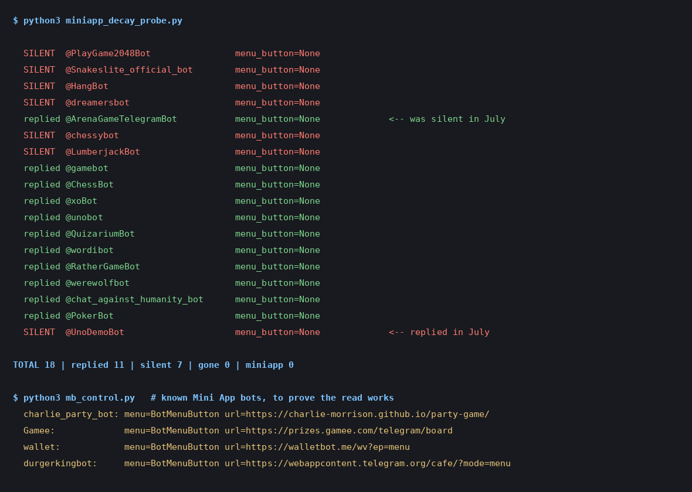

Telegram Games in 2026: 18 Bots Retested, 0 Have Mini Apps
Five weeks ago I took every bot recommended by three top-ranking "best Telegram games" articles, sent each one a real /start, and counted the replies. Eleven answered. Seven said nothing at all.
The obvious criticism of that test is that it is a photograph. Bots go down for an afternoon. A server reboots. Maybe I caught seven of them on a bad Tuesday, published the number, and it was wrong by Wednesday.
So on 30 August 2026 — 34 days later — I ran the whole thing again against the same 18 handles.
The score was identical: 11 replied, 7 were silent. Which looks like a boring result, and would have been, except that it is not the same eleven. One bot came back from the dead and a different one died. The aggregate held still while the list underneath it moved.
And the second measurement, which I did not go looking for, turned out to matter more: not one of the 18 exposes a Mini App. Every single bot on every list is still a pure chat-command bot from the previous era of Telegram gaming.
The retest, bot by bot
Method first, because a liveness test is only worth anything if you know exactly what counted as alive. I recorded the newest message ID already in each chat, sent /start, then counted only messages newer than that. Without that step, an old greeting sitting in the chat from a previous visit makes a dead bot look like it answered — which, on two of these chats, it would have.
One deliberate difference from July: that run went bot by bot, waiting 15 seconds each. This run recorded every baseline first, sent all 18 with 6–11 seconds of pacing between them, then read the replies back in one pass. That means every bot got at least the original 15 seconds and most got far longer — the last bot waited 30 seconds, the first waited nearly three minutes. The batch shape can make a slow bot look alive; it cannot invent a death. Since deaths are the finding, that is the direction I wanted the error to run in.
| Bot | Listed as | July 28 | August 30 |
|---|---|---|---|
| @ArenaGameTelegramBot | Arena Game RPG | Silent | Replied |
| @UnoDemoBot | UNO | Replied | Silent |
| @gamebot | Telegram Gaming Platform | Replied | Replied |
| @ChessBot | Chess | Replied | Replied |
| @xoBot | Tic Tac Toe | Replied | Replied |
| @unobot | UNO | Replied | Replied |
| @QuizariumBot | Quizarium | Replied | Replied |
| @wordibot | Wordle-style | Replied | Replied |
| @RatherGameBot | Would You Rather | Replied | Replied |
| @werewolfbot | Werewolf | Replied | Replied |
| @chat_against_humanity_bot | Cards Against Humanity | Replied | Replied |
| @PokerBot | Poker | Replied | Replied |
| @PlayGame2048Bot | 2048 Puzzle | Silent | Silent |
| @Snakeslite_official_bot | SnakeLite | Silent | Silent |
| @HangBot | Hangman | Silent | Silent |
| @dreamersbot | Dreamers | Silent | Silent |
| @chessybot | Chessy | Silent | Silent |
| @LumberjackBot | Lumberjack | Silent | Silent |

The run's own output. The <-- markers are the two bots that swapped sides since July. The bottom block is the control described below.
A stable number is not a stable list
Six of the seven dead bots in July are still dead five weeks later — 2048, SnakeLite, Hangman, Dreamers, Chessy and Lumberjack. That is the durable part, and it is the part I would now bet on: a Telegram game bot that has been off for a month is not coming back. Nobody is quietly maintaining it.
The two that moved are more interesting than the sixteen that did not.
Arena Game answered this time. In July it was silent; on 30 August it replied. I have no idea whether it was rebooted, migrated, or simply down for the hours my first test ran. That is precisely the point — and it is the honest correction to my earlier article, which listed it among the seven. One of my seven was a false positive for "abandoned", and the only reason I know is that I ran the test twice.
UnoDemoBot stopped answering. It replied in July and returned nothing in August. Note the pair: @unobot is still perfectly alive and serving the same game. If you had followed a listicle that happened to name the demo bot rather than the main one, you would conclude UNO on Telegram is dead. It is not. It is one handle out of two.
This is the practical lesson for anyone reading a "best Telegram games" list, including mine: the score at the bottom of the article ages far better than the individual names in it. Roughly a third of the recommended handles being dead seems to be a stable property of this category. Which third is not stable at all.
The finding I was not looking for: zero Mini Apps
While the script had each bot open, it also read something else — the bot's menu button. That is the control Telegram uses to attach a Mini App: a full web app that opens inside Telegram rather than a conversation made of chat commands. If a bot has one, the menu button carries a URL. If it does not, the field is empty.
All 18 came back empty.
A result of exactly zero should make you suspicious of the instrument rather than the world, so I checked the instrument. I ran the same read against four bots I already knew have Mini Apps, including Telegram's own demo, @durgerkingbot:
| Control bot | Menu button |
|---|---|
| @durgerkingbot (Telegram's demo) | webappcontent.telegram.org/cafe/ |
| @Gamee | prizes.gamee.com/telegram/board |
| @wallet | walletbot.me/wv |
| @charlie_party_bot (mine) | charlie-morrison.github.io/party-game/ |
The read works. Four for four on bots that have Mini Apps, zero for eighteen on the bots every list recommends. That is a real gap, not a broken script.
Which means the recommendation lists are describing a version of Telegram gaming that Telegram itself has largely moved on from. Mini Apps are where the platform put its effort — they get a proper web view, a payments path, and placement inside the app. The bots on the lists predate all of it, and several of them predate the current Bot API era entirely. @gamebot is the giveaway: it is the front end for the old HTML5 games platform, a 2016 feature.
So where did the games actually go?
Here is the part that a "best Telegram games" list ought to tell you and generally does not. Search for Telegram Mini App games today and you will not find a modern SnakeLite. You will find tap-to-earn crypto: coin-tapping games built around a token, an airdrop and a referral tree. That is genuinely where the volume went, and Telegram's own platform announcements track the same arc.
I am not going to recommend any of them, and I want to be explicit that this is a judgement rather than a measurement. I did not test them, because they are a different product from what someone asking "what can I play with my friends on Telegram" wants. Those games are an earnings mechanic with a game skin, they usually want a wallet connected, and the reason a stranger wants you in one is the referral. If you go looking, go in knowing what the category is.
Which leaves an odd, useful gap: for actually playing something with friends in a chat, the ageing command bots are still the live option. Eleven of them work. That is not a nostalgic preference, it is just where the working software is.
The four ways to play, ranked by how likely they are to work
Putting five weeks of testing together, there are four distinct mechanisms, and they are not equally reliable:
1. Telegram's built-in emoji games. The most dependable by a wide margin, because there is no third-party server involved at all — the result is drawn by Telegram. Six of them exist, not one, and I threw 900 of them to check they are fair. They cannot be switched off by an owner losing interest.
2. Quiz polls. Also native, also no bot. Good for a quiz night with real scoring, though there are hard limits on options and timing that decide whether a round survives contact with a group.
3. Command bots. The 11 above. Real games, real multiplayer, and a one-in-three chance that any given recommendation is a corpse. Always test before you promise your group a game night on one.
4. Mini Apps. Technically the most capable and where the platform is heading, but for casual group play in 2026 the ecosystem is dominated by crypto. Nothing on the recommendation lists uses it yet.
/start, and wait fifteen seconds. A live bot answers in well under a second, because a program is answering, not a person. Nothing back means the backend is off, no matter how healthy the profile page looks. A bot account outlives the server behind it, which is exactly why dead ones accumulate on these lists undetected.Why dead bots pile up
Worth saying plainly, because I did it myself: I run a Telegram game, and in May 2026 I switched off the chat-command backend behind it. The bot account stayed. The profile page kept loading. My own article kept telling people to add it to a group and type /play, into total silence, for weeks, before I noticed.
Nobody complained. That is the mechanism. A dead bot does not generate a complaint, it generates nothing — so the failure is invisible to the person who wrote the recommendation and to everyone who reads it. The listicles copy each other's handles, and the handles keep resolving to a real-looking profile long after anyone is home. Checking takes fifteen seconds and essentially nobody does it.
Running the night in a group chat?
Picking a live bot is the easy half. A group chat is the hard half: people answer forty minutes apart, and a round falls apart the moment two replies land at once. The Telegram Party Pack is built for that — 255 prompts across six games, a host guide for a 60-minute night in a chat, and the poll, spoiler-tag and threading mechanics that keep a round readable when nobody is in the same room. Copy-paste blocks for every round, PDF included.
Get the pack — $9.99 Every bot and emoji game above stays free — they are not mine to sell. See what's in the pack before you buy.The full July run, with what each of the seven silent bots was listed as: I messaged 18 "best" Telegram game bots. If you just want games that work tonight: the party games worth playing, and how to run a game night in a group chat.
← All posts